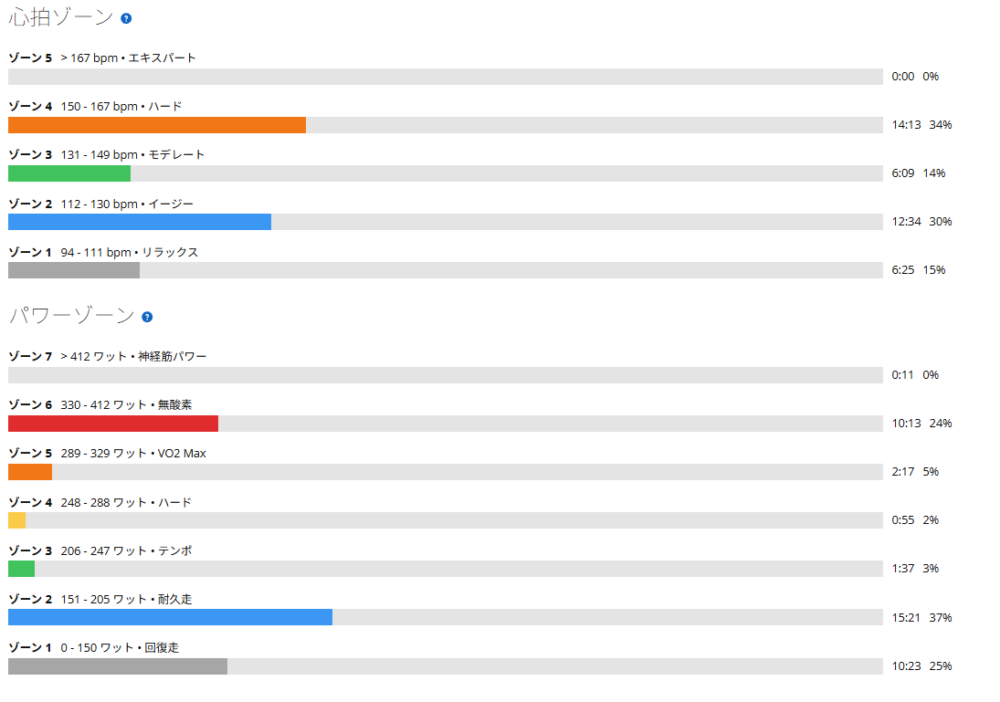

実走より揃う。でも後半は出ない。ローラーでやった60/30
今日は60秒ON／30秒OFF。本当は実走でやるつもりだったが、天気が怪しかったのでローラーに変更した。前日はANCHORで約1時間のアクティブレスト。平均心拍106bpmで軽く終えている。
前回の実走60/30では、ケイデンスを変えながら「どうすれば350W前後を安定して出せるのか」を試した。100rpmを超えるとパワーは出しやすいが出すぎる。逆に85rpm付近まで落とすと350Wの維持が難しい。そこで今回はその中間、90rpm前後を狙ってみることにした。しかも今回はローラー。実走と何が変わるのかも見てみたい。

21.35km・NP261W・TSS61.3
- 全体21.35km / 41分12秒 / 運動負荷114
- 負荷平均220W / NP261W / IF0.951 / TSS61.3
- 心拍・回転平均132bpm / 最大161bpm / 平均78rpm / 最高105rpm
- 高強度側パワーZ6が10分13秒 / 心拍Z4が14分13秒（全体の34%）
時間だけ見れば41分。短い。でも終わった感覚はまったく短くない。IFは0.951で、これまでの60/30の中でいちばん高い。330〜412WのZ6だけで10分13秒、心拍も150〜167bpmのZ4に14分13秒入っている。そりゃきつい。
1セット目は平均354W。振れ幅14W
- 1セット目のON352W → 362W → 353W → 352W → 358W → 348W
- 平均・振れ幅約354W / 348〜362Wで14W
かなり揃った。前回の実走では入りでパワーが跳ねてしまうことがあったが、ローラーだとそれがかなり少ない。加速も路面も勾配の変化もないので、350W付近へ持っていって、そのまま維持することに集中できる。
「ローラーの方がパワーが上振れしないので揃えやすい」。これは実際にやってみてかなり感じた。1セット目だけ見れば、狙い通りと言っていいと思う。問題はここからだった。

2セット目は平均339W。維持できなかった
- 2セット目のON352W → 339W → 342W → 322W → 338W → 338W
- 平均・振れ幅約339W / 322〜352Wで30W
5分休んで2セット目。明確に落ちた。特に途中から350Wを維持できなくなった。気持ちとしては350Wまで持っていきたい。でも脚が回らない。今回の60/30は、めちゃくちゃきつかった。
1セット目ではかなり綺麗に揃っていたのに、2セット目になると同じことができない。実走なら身体全体や重心移動を使えるし、加速した瞬間にパワーが上振れすることもある。ローラーではそれがない。350Wを出したければ、自分で350Wを踏み続けるしかない。パワーを揃えやすい代わりに、逃げ場もない。今回の2セット目は、その違いがそのまま数字になったように思う。
ケイデンス90前後は良さそう
今回のON区間は、おおむね90rpm前後。前回の実走で試した感覚ともつながった。
- 100rpm超パワーは出しやすい。ただ400W近くまで簡単に上がり、後半に響く
- 85rpm付近上振れしにくい。ただ350Wの維持が難しい
- 90rpm前後必要以上に上振れさせず、350W付近へ持っていきやすい
少なくとも今の私には、この辺りが60/30をやるときの基準になりそうだ。もちろん今回は2セット目で出力が落ちたので、まだ「これで完成」という話ではない。むしろ次の課題がかなり分かりやすくなった。
実走とローラー、それぞれ違う難しさがある
最近は同じメニューを実走とローラーの両方でやっている。過去の60/30と並べてみると、違いがはっきり出た。
- 8月19日（実走）1セット目374W（振れ幅21W）→ 2セット目364W（32W）／セット間 −10W
- 8月26日（実走）1セット目359W（14W）→ 2セット目364W（26W）／セット間 +5W
- 今日（ローラー）1セット目354W（14W）→ 2セット目339W（30W）／セット間 −15W
面白いのはここである。1セット目の振れ幅14Wは、実走のベストとまったく同じ。狙った出力へ入る精度で言えば、ローラーは確かに優秀だった。それなのにセット間の落ち込みは−15Wで、3回の中でいちばん大きい。
実走は身体全体を使いやすく、パワーそのものは出しやすい。その代わり、加速などで必要以上に上振れしやすい。ローラーは上振れしにくいので狙った数字には揃えやすい。その代わり、疲れてきたときに誤魔化しが利かない。どちらが楽というより、難しさの種類が違う。今回はその違いをかなりはっきり感じることができた。
次は「350Wを12本」揃えたい
今回は出力をさらに上げる必要はないと思う。1セット目で350W前後を揃えることはできた。だから次は「350Wを出せるか」ではなく「350Wを12本揃えられるか」を目標にしたい。2セット目まで350W付近で揃うようになってから、その先を考えればいい。
そして何より、2セット目に350Wを維持できなかった。これが今の実力なのだと思う。だったら話は簡単。次は維持できるようになればいい。富士ヒルまで、まだ時間はある。実験は続く。
次に見るポイント
- 2セット目350W付近を最後まで維持できるか。セット間の落ち込みを15Wから縮められるか
- 振れ幅2セット目の30Wを、1セット目の14Wへ寄せられるか
- ケイデンス90rpm前後が本当に基準として機能し続けるか
- 実走との差同じ狙いを実走でやったとき、どちらが揃うか